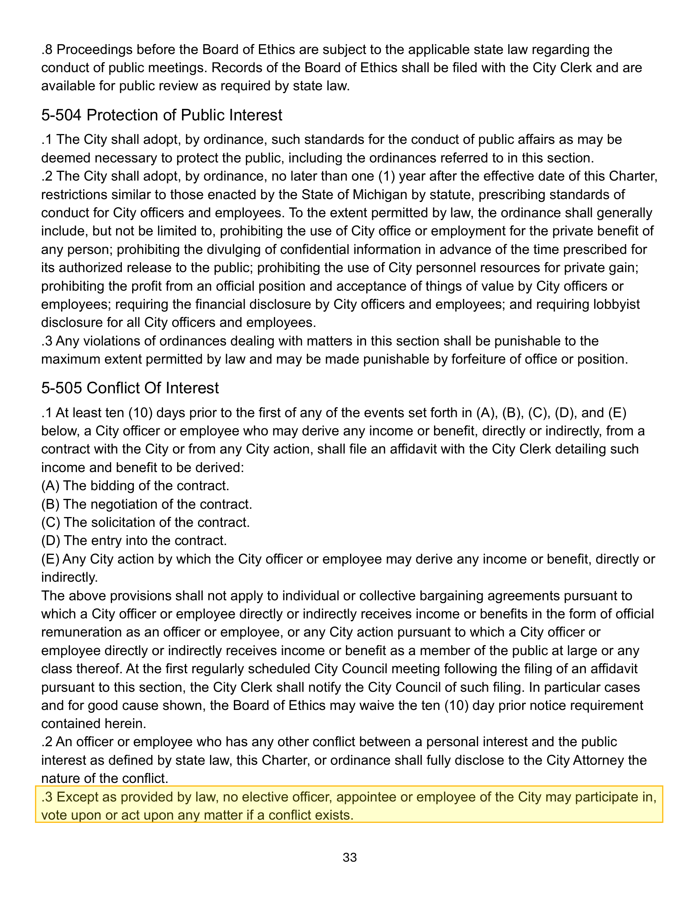
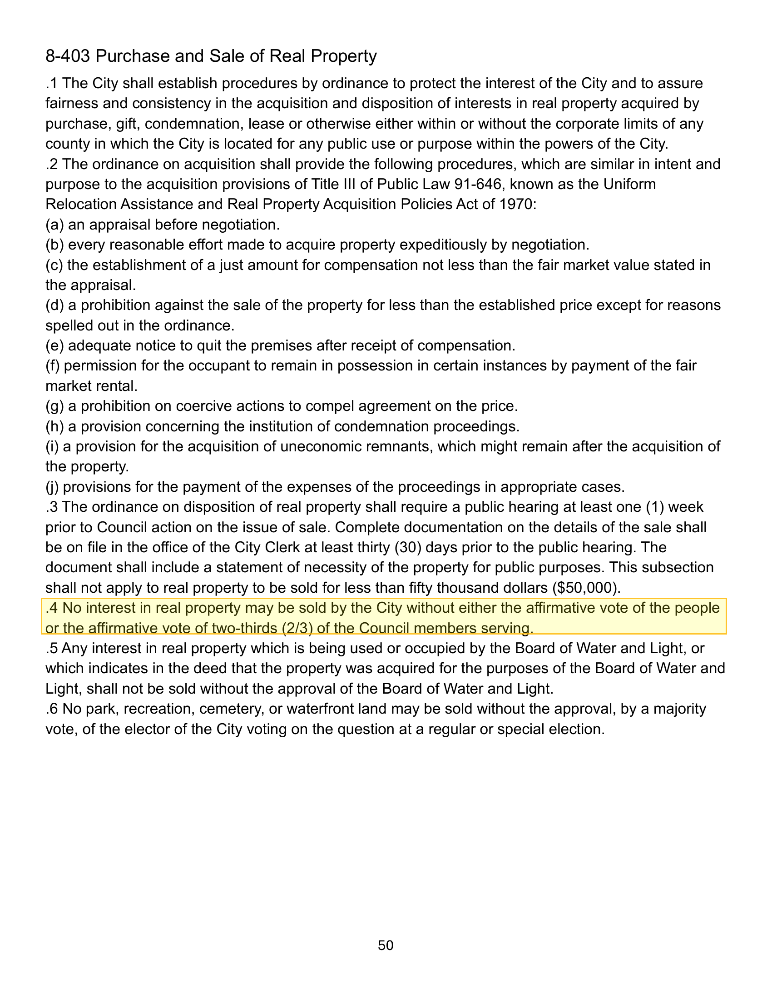
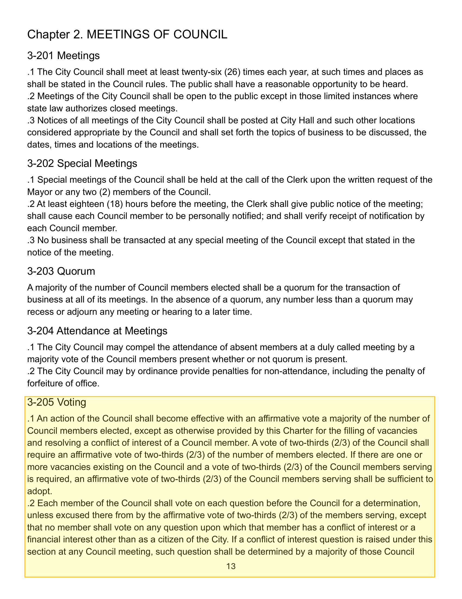

Lansing: A Conflict Question Could Reshape the Deep Green Land Sale Vote
LANSING, Mich. — The Lansing City Charter requires a two-thirds supermajority to sell city-owned real property. On an eight-member Council, that means six yes votes. WLNS reported in mid-March that Deep Green's $1.4 million land purchase had five likely supporters. Two Council members have publicly indicated they would vote no. A third told WLNS she was "leaning no."
A DOL filing confirms Garza earns $126,742/year from the Michigan Pipe Trades Association. See The Garza Conflict, Spelled Out.
Among the five expected yes votes is Council Member Jeremy Garza, Vice President of UA Plumbers and Pipefitters Local 333 and a $126,742-per-year salaried employee of the Michigan Pipe Trades Association (DOL File 054-059, Schedule 12), the statewide body coordinating the unions that benefit from construction projects. Deep Green has committed to using union construction labor, and a Local 333 officer told the March 23 Council meeting he anticipated a 20-year maintenance contract. The Local 333 PAC has given Garza $24,500 across his Council campaigns.
The Charter prohibits Council members from voting on questions where they hold a financial interest. If Garza were found to have one and could not vote, the project's maximum possible yes count would drop to five, and the sale would not pass.
What the Charter Says
Three provisions of the Lansing City Charter apply to this situation.
Section 5-505.1(E) requires a city officer who may benefit from a City action to file an affidavit with the City Clerk at least ten days before the action:
"At least ten (10) days prior to the first of any of the events set forth in (A), (B), (C), (D), and (E) below, a City officer or employee who may derive any income or benefit, directly or indirectly, from a contract with the City or from any City action, shall file an affidavit with the City Clerk detailing such income and benefit to be derived: ... (E) Any City action by which the City officer or employee may derive any income or benefit, directly or indirectly."
Lansing City Charter, Section 5-505.1, charter page 33.
Section 5-505.3 states the consequence:
"Except as provided by law, no elective officer, appointee or employee of the City may participate in, vote upon or act upon any matter if a conflict exists."
Lansing City Charter, Section 5-505.3, charter page 33.
Section 3-205.2 addresses conflicts specifically during Council votes:
"No member shall vote on any question upon which that member has a conflict of interest or a financial interest other than as a citizen of the City."
Lansing City Charter, Section 3-205.2, charter pages 13-14.

The Vote Threshold
Section 8-403.4 sets the bar for selling city property:
"No interest in real property may be sold by the City without either the affirmative vote of the people or the affirmative vote of two-thirds (2/3) of the Council members serving."
Lansing City Charter, Section 8-403.4, charter page 50.

Section 3-205.1 defines how two-thirds is calculated: "an affirmative vote of two-thirds (2/3) of the number of members elected." Eight members were elected. Five yes votes out of eight is 62.5%, which falls short. Six out of eight is 75%, which clears it. The minimum is six.

The Charter includes one exception: if there is a vacancy (an unfilled seat), the denominator shifts to "members serving." All eight seats on the current Council are filled. A recusal is not a vacancy. The denominator stays at eight.
Garza's Situation
The Deep Green land sale is a City action. If it leads to union construction jobs and a long-term maintenance contract, the VP of that union derives benefit indirectly.
UA Local 333's leadership page lists Garza as Vice President. At the March 23 Council meeting, Deep Green CTO Matt Craggs said the company is "committed to using union construction jobs" and is "working towards an agreement with Union Labor." Derek Wright, identifying himself as a member of Local 333, testified in support: "I support the deep green primarily for jobs for my local brothers and sisters and myself. And then if there's going to be a 20-year maintenance contract, that will also provide money and payment and taxes from my local brothers and sisters."
The Local 333 PAC gave Garza's campaign $24,500 on February 20, 2025, the largest single expenditure in the PAC's 28-year filing history. Garza made no public comments on the Deep Green project at the March 23 meeting.
Deep Green is not the first time this question has come up. On August 25, 2025, Garza voted to pass Ordinance #1339, which added new criteria to the city's construction bidding code. The criteria require bidders to document registered apprenticeship programs, OSHA safety training, employer-sponsored healthcare, and pension plans. These qualifications are standard for union contractors. Three Local 333 officers, including Business Manager Dustin Howard, testified in support at the July 28 public hearing. Garza gave the hearing overview, voted YEA on the 7-1 roll call, and moved to give the ordinance immediate effect. A search of CivicClerk Council meeting records from January 2024 through March 2026 found no evidence of Garza recusing from any development or construction-related vote.
The Math
If Garza does not vote, seven members remain. Council Members Ryan Kost and Adam Hussain have both indicated they would vote no (WLNS), leaving a maximum of five yes votes. The threshold is six.
| Scenario | Members voting | Threshold (2/3 of 8) | Max possible YES |
|---|---|---|---|
| Full Council | 8 | 6 | 6 |
| Garza does not vote | 7 | 6 | 5 |
Raising the Question
Section 5-505.3 does not require a vote or a determination by colleagues to take effect. If a conflict exists under the Charter, participation is prohibited whether or not anyone raises the question.
Under Section 3-205.2, a conflict question can also be raised at any Council meeting and decided by a majority of members present. Any Council member can raise it before the main question is voted on.
The Board of Ethics (Section 5-503.2) may render a formal opinion "on its own initiative or upon request" on any matter within its authority. A resident can request that opinion.
If a Council member with a conflict votes anyway, the Charter provides remedies after the fact. Section 2-302.3 allows any resident to petition a court to require the Council to hold a public hearing on the forfeiture of an office. Violations of the conflict provisions are punishable "to the maximum extent permitted by law and may be made punishable by forfeiture of office or position" (Section 5-504.3).
Precedent
In 2025, At-Large Council Member Tamera Carter recused herself twice from votes involving a property owned by her sister-in-law. The Council approved those recusals. Later, Carter voted on the same property after City Attorney Gregory Venker told her there was no conflict. An ethics expert consulted by WLNS disagreed with Venker's determination. WLNS reported that City Clerk Chris Swope admitted the recusal motions were not recorded in the minutes or forwarded to the Board of Ethics as required by the Ethics Ordinance. Carter's Statement of Financial Interests did not disclose her sister-in-law's businesses.
City Attorney Venker would also be the official consulted if a conflict question were raised about Garza's vote on the Deep Green land sale. Clerk Swope would be responsible for recording any recusal under the Ethics Ordinance. Both have already demonstrated how they handle conflict questions.
Current Status
The land sale hearing was held March 23, 2026. The rezoning hearing is set for April 6. The land sale was referred to the Committee of the Whole. No vote has been taken on either the sale or the rezoning.
Forty-three members of the public spoke against the project at the March 23 hearing. Six spoke in favor. The public comment count comes from a full review of the meeting transcript.
Sources
City of Lansing City Charter, adopted November 4, 2025, prepared by the Lansing City Clerk's Office (PDF). Sections 5-505.1, 5-505.3, 5-504.3, 5-503.2, 3-205.1, 3-205.2, 8-403.4, and 2-302.3 quoted or cited. Charter page screenshots extracted from the same document. WLNS 6 News Investigates, "Deep Green's Lansing project could fail City Council vote". WLNS, "Ethics concerns raised over Lansing City Council vote." WLNS, "Lansing Clerk admits failure to follow Ethics Ordinance." March 23, 2026 City Council meeting, CivicClerk Event 7881. UA Local 333 PAC, MiTN Committee 507652.